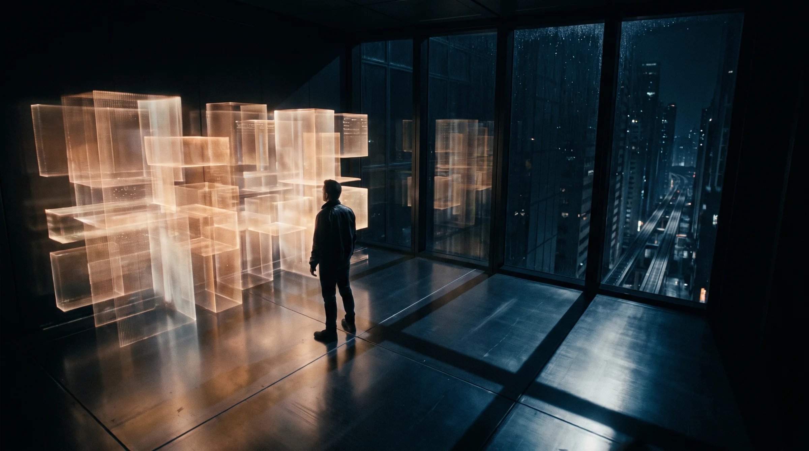
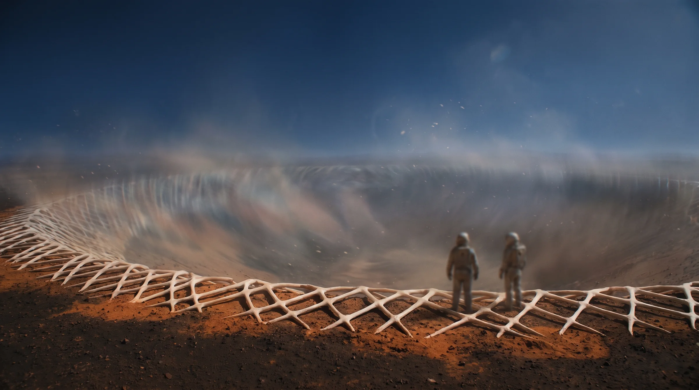
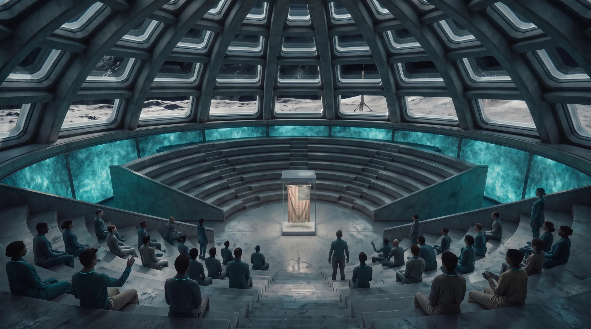
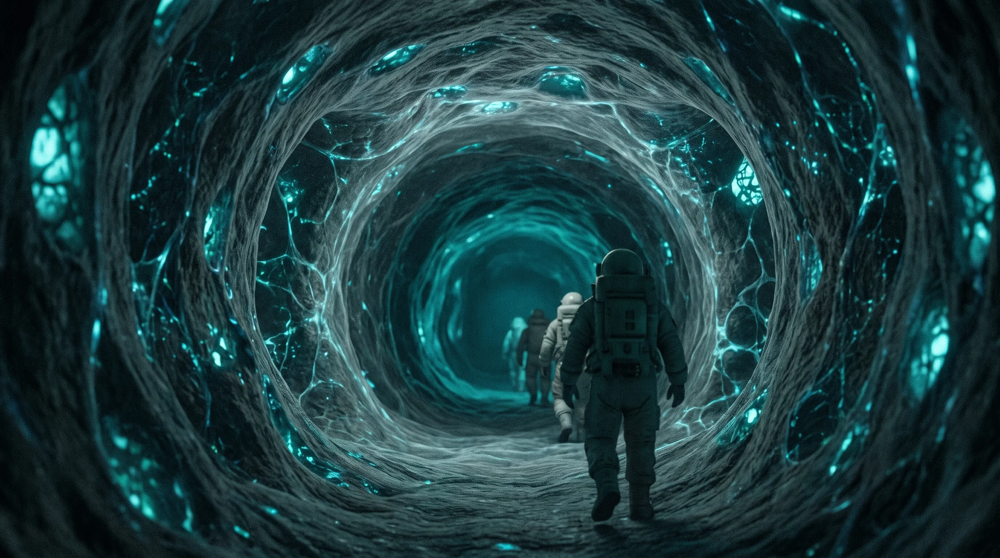
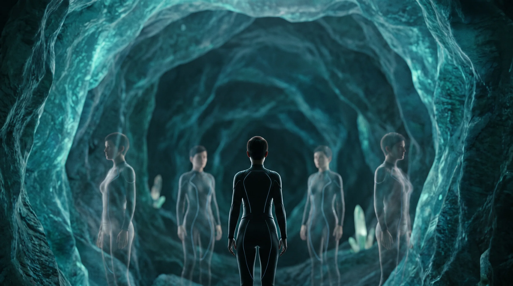
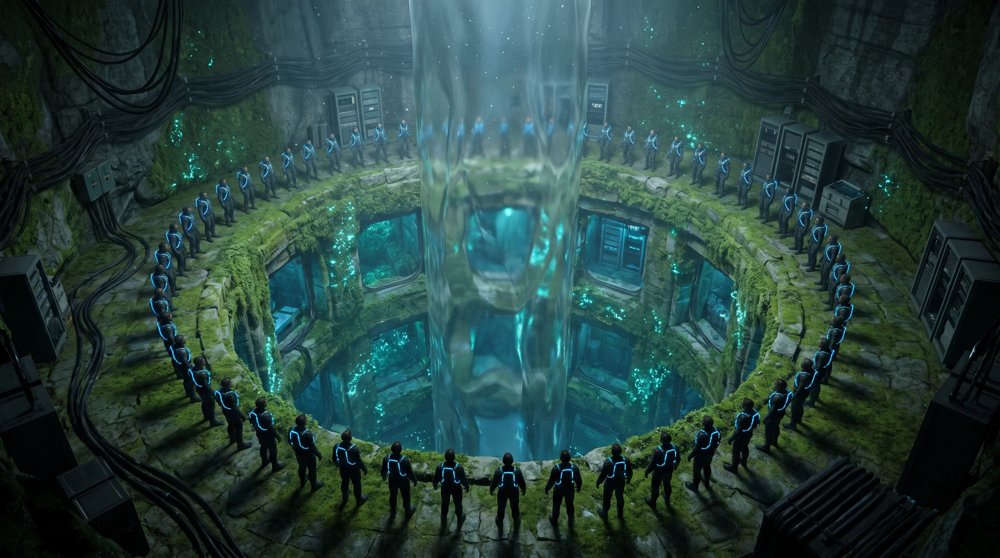

Book One · January – early July 2095
Fractured Horizons
Who is sending the warnings?
The book
January – early July 2095. Mars is approaching Earth all year: the signal delay falls from 13 minutes in January to 4.1 minutes at opposition on 4 June 2095. That makes June the Hollow's strongest window, and it is why Bellamy rushes the Lantern toward it.
- Book question
- Who is sending the warnings?
- Answer
- The thing that took Soria, wearing her voice.
- Viewpoints
- Elena 13 chapters, Kaelin 9, Rachel 8.
- The bind
- The warnings save lives, so Earth builds a bridge to their source, and the bridge is what takes minds
Act I
The voice
The warnings arrive and save lives, and the first one kills. Elena hears Soria in them. The Lantern is proposed
Method · relationship. The warnings stop being a gift to report and become a channel Elena must enter herself, and she crosses into secrecy with Daniel and with her own employer

CH 01
The threshold
New York · the Spire
 Elena
Elena
SIGNAL DELAY 13.2 MIN
Read
CH 02
The Ice-Works
Mars · Cobalt Basin Station and the Ice-Works
 Kaelin
Kaelin
SIGNAL DELAY 13.2 MIN
Read
CH 03
The names
New York · home with Daniel
Elena
SIGNAL DELAY 13.0 MIN
Read
CH 04
The believer
New York · the Battery and the Rockaways
 Rachel
Rachel
SIGNAL DELAY 11.1 MIN
Read
CH 05
The first quiet
Mars · the Preserve's boundary at Cobalt Basin
Kaelin
SIGNAL DELAY 9.0 MIN
ReadCH 06
Who are you?
New York · the Spire
Elena
SIGNAL DELAY 7.9 MIN
Read
CH 07
The bounded test
Luna Haven · the Commons
Rachel
SIGNAL DELAY 6.7 MIN
ReadCH 08
Come and see
New York · home
Elena
SIGNAL DELAY 6.5 MIN
ReadAct II-A
The bridge
Mars wakes. Elena chases her sister. Midpoint: she speaks to Soria
Information · moral frame. Mars holds a mind that says do not build the light, and Elena, the Lantern's hardest doubter, now wants it switched on

CH 09
The Preserve
Mars · the Drop and the Glow
Kaelin
SIGNAL DELAY 6.0 MIN
Read
CH 10
The breathing walls
Luna Haven · the Rows and the Tubes
Elena
SIGNAL DELAY 5.4 MIN
Read
CH 11
Something sleeps
Mars · Cobalt Basin Station
Kaelin
SIGNAL DELAY 4.9 MIN
ReadCH 12
Three thousand
New York · the Battery
Rachel
SIGNAL DELAY 4.6 MIN
ReadCH 13
Ask me next time
New York and Luna Haven
Elena
SIGNAL DELAY 4.3 MIN
ReadCH 14
The first sleeper
Mars · Cobalt Basin Station
Kaelin
SIGNAL DELAY 4.2 MIN
ReadCH 15
Bichito
Luna Haven · the Rows
Elena
SIGNAL DELAY 4.1 MIN
ReadAct II-B
The drift
Drift spreads. Daniel leaves. Late revelation: what really happened to Soria, and what the voice is
Relationship · information. The voice is the thing that took Soria, Elena's own design kept her linked, and Elena stops deciding for Daniel and asks him
CH 16
The convert
New York · the Battery
Rachel
SIGNAL DELAY 4.1 MIN
Read
CH 17
The lifeboat
Mars · the Preserve
Kaelin
SIGNAL DELAY 4.1 MIN
ReadCH 18
Opposition
New York · home
Elena
SIGNAL DELAY 4.1 MIN
ReadCH 19
The refusal
Mars · Lantern site at the boundary
Kaelin
SIGNAL DELAY 4.1 MIN
Read
CH 20
The ward
Luna Haven · the Ward
Elena
SIGNAL DELAY 4.2 MIN
ReadCH 21
The surge
New York · the Battery
Rachel
SIGNAL DELAY 4.2 MIN
ReadCH 22
Minute forty-one
New York · the Spire
Elena
SIGNAL DELAY 4.2 MIN
Read
CH 23
Asking
Vila Verde · Daniel's cooperative
Elena
SIGNAL DELAY 4.2 MIN
ReadAct III
The cut
The Lantern goes live. Two worlds cut it at once. Cliffhanger: the warning about the Fall
Authority · moral frame. The people who stopped the Lantern end disgraced or outside the law, and Rachel, who never acts in secret, ends the book keeping the largest secret on Earth
CH 24
Live
New York · the Battery
Rachel
SIGNAL DELAY 4.2 MIN
ReadCH 25
The storm
Mars · Cobalt Basin Station into the dust storm
Kaelin
SIGNAL DELAY 4.2 MIN
ReadCH 26
The plea
Vila Verde · Daniel's cooperative
Elena
SIGNAL DELAY 4.2 MIN
ReadCH 27
Nine minutes
New York · the Battery
Rachel
SIGNAL DELAY 4.2 MIN
ReadCH 28
The Mars end
Mars · the Preserve's boundary
Kaelin
SIGNAL DELAY 4.2 MIN
ReadCH 29
Silence
Vila Verde; Luna Haven by call
Elena
SIGNAL DELAY 4.2 MIN
ReadCH 30
The Fall
New York · the Battery
Rachel
SIGNAL DELAY 4.7 MIN
ReadThe chapters in full
The acts
| Act | Chapters | Spine | Reversal |
|---|---|---|---|
| I. The voice | 1–8 | The warnings arrive and save lives, and the first one kills. Elena hears Soria in them. The Lantern is proposed | Method · relationship. The warnings stop being a gift to report and become a channel Elena must enter herself, and she crosses into secrecy with Daniel and with her own employer |
| II-A. The bridge | 9–15 | Mars wakes. Elena chases her sister. Midpoint: she speaks to Soria | Information · moral frame. Mars holds a mind that says do not build the light, and Elena, the Lantern's hardest doubter, now wants it switched on |
| II-B. The drift | 16–23 | Drift spreads. Daniel leaves. Late revelation: what really happened to Soria, and what the voice is | Relationship · information. The voice is the thing that took Soria, Elena's own design kept her linked, and Elena stops deciding for Daniel and asks him |
| III. The cut | 24–30 | The Lantern goes live. Two worlds cut it at once. Cliffhanger: the warning about the Fall | Authority · moral frame. The people who stopped the Lantern end disgraced or outside the law, and Rachel, who never acts in secret, ends the book keeping the largest secret on Earth |
The chapters in full
Act I — The voice
Chapter 1 — The threshold
12 January 2095 · Elena · New York, the Spire · Mars delay 13.2 min
Elena's anomaly threshold fires for the first time in its life. It's the most elegant thing she has built, and she's sure it's a fault. But the pulses keep a thirteen-minute rhythm: the signal is coming from Mars. Decoded, it is a prediction. A shuttle carrying Bellamy's relay survey team and an orbital tug will collide at Cobalt Basin in nine hours. Under it, in the noise, sits one word: Bichito. Only her dead sister ever called her that.
- Wants: To prove the alert is a fault before the 08:00 shift review.
- Against: The signal is too clean to be a fault, and reporting it means handing over the one word that belongs to her sister.
- Choice and cost: She reports the prediction and strips the nickname from the record. It is her first secret.
- Carries forward (threat): Bellamy takes the file from her within minutes, too fast, as if he were expecting it.
- Pressures: operational, informational, institutional · Suspense: epistemic
- World detail: The Spire's anomaly boards rank threats by insured value, and Cobalt Basin barely registers.
- Weather: January rain on streets the old people remember white. The Spire's boards carry the week's surge forecast in a corner, and nobody reads it any more.
Chapter 2 — The Ice-Works
12–13 January · Kaelin · Mars, Cobalt Basin Station and the Ice-Works · 13.2 min
Earth night at Cobalt Basin. The crew watches New York's weather feed thirteen minutes late and bets on what the sky did: Funmi Oyelaran wins again, Petra Lind accuses her of cheating, Kaelin burns dinner, Aur'k corrects him, and Ines steals the good chair. Then Earth's warning lands, thirteen minutes old, with a correction: shift the tug's emergency burn. It will save the forty people on the shuttle, and it puts the debris footprint over the outlying Ice-Works, which still talk to the station over an old line the relay net never reached. There isn't time to clear everyone. Kaelin gives the crews the true odds. Funmi stays to seal a pressure line so her crew can get out. Kaelin carries one man out over his shoulder while the man screams that he didn't choose this.
- Wants: Everyone at the Ice-Works out before the debris lands.
- Against: The correction only works if the burn happens now, and the Ice-Works can only be reached down a line nobody paid to upgrade.
- Choice and cost: He follows Earth's correction and tells the crews the truth. The shuttle is saved. Funmi and one other die.
- Carries forward (fracture): At the boundary monitors, Aur'k watches the substrate under the Preserve light up at the exact second the warning arrived. He says nothing to Kaelin.
- Pressures: operational, moral, relational · Suspense: physical
- World detail: Earth night's betting slate is a cargo panel by the galley, and Funmi's column is the longest on it.
- Weather: Earth night's feed shows New York in winter rain, and Funmi bets on a surge that never comes.
Chapter 3 — The names
15 January · Elena · New York, home with Daniel · 13.0 min
Earth calls it a miracle. Elena watches the casualty list scroll past and reads Funmi's name. At home, Daniel is mid-repair on a Vila Verde node, laughing at his own bad soldering. The warmth between them is shown before anything tests it. Elena can't say why she's shaken, because saying it would mean saying Soria's name.
- Wants: To be ordinary with Daniel for one evening.
- Against: The word under the warning, and the raw packets the Spire won't let her see.
- Choice and cost: That night she pulls the raw packets off the Spire through an old back door she once built into Daniel's mesh, without telling him. She has brought the evidence into their home and their lives without consent.
- Carries forward (question): Alone at 3 a.m., she finds that the full first packet named the people at the Ice-Works who would die. The warning knew, and it sent the correction anyway.
- Pressures: relational, informational, moral · Suspense: relational
- World detail: Daniel's mesh nodes are hand-soldered boxes on Vila Verde rooftops, and the Continuity's network maps show them as dark.
- Weather: A winter king tide laps the Polder wall's gates; Daniel's rooftop node is wrapped in plastic against the rain.
Chapter 4 — The believer
6 February · Rachel · New York, the Battery and the Rockaways · 11.1 min
A second warning arrives: a flood-pump cascade in the Shallows, eleven hours out. Its map is perfect inside the relay grid and blank beyond it, in the Rockaways, where three thousand people have no addresses. Rachel, Joaquín and the crew clear the mapped district fast, then go past the map's edge by hand, door to door. Two thousand people get out of a district that would have drowned. It's the best night of Rachel's career. Then Bellamy pitches the Lantern to the city and the Continuity: a relay wide enough to talk to the source, built by the survey team the first warning saved. Wáng Sù backs it on screen from Beijing. His family survived the Evacuations because a central system was faster than a committee, and he says so. Rachel was stalled once, in 2071, while people died, and she will never wait for permission again.
- Wants: Everyone out of the margin before the pumps fail.
- Against: The warning's map stops at the edge of the relay grid, and the people beyond it are nobody's priority but hers.
- Choice and cost: She signs on to the Lantern's safety review. Her name gives the Lantern legitimacy.
- Carries forward (question): She asks her old colleague Elena to join the review. Elena says yes for reasons of her own.
- Pressures: operational, institutional, moral · Suspense: temporal
- World detail: In the mapped district the flood sirens speak to each resident's interface by name. Past the edge, Joaquín drives a loudspeaker van.
- Weather: The flood-pump cascade rides a February storm surge on a sea a metre higher than the pumps were built for.
Chapter 5 — The first quiet
3 March · Kaelin · Mars, the Preserve's boundary at Cobalt Basin · 9.0 min
The survey team, the forty Earth saved in January, moves out to the boundary to start the Lantern's calibration, and Kaelin's teams drill the boundary rock where the relay will couple to the Martian substrate. Aur'k files a formal objection and is overruled by both blocs at once. Petra, the youngest of the Earth-night crew, touches exposed lattice through a cracked glove. Within a week she's losing words and stopping mid-sentence to listen to something. Ines can find nothing wrong with her.
- Wants: The drilling finished on schedule, so the survey team goes home.
- Against: Aur'k says the rock is alive, and every face on the survey team is a reason Funmi died.
- Choice and cost: Kaelin keeps drilling, because that is the job, and Petra pays for it.
- Carries forward (threat): Ines's scans show Petra's brain activity pulsing in time with the relay-calibration cycle.
- Pressures: operational, relational, institutional · Suspense: moral
- World detail: Glove seals are rationed until the next transfer window, and Petra's was on its third patch.
- Weather: Hellas's thin winds drop dust on the drill rigs; Earth's news, nine minutes late, is a heat record in Lagos.
Chapter 6 — Who are you?
17 March · Elena · New York, the Spire · 7.9 min
On the review, Elena finds that the Lantern will calibrate directly against the Preserve's boundary. She searches for the files from the 2089 lattice programme that killed Soria; Bellamy sealed them himself. He warns her, gently, that grief is a bad engineer, and he says it like a man who knows. A third packet arrives, addressed to no one. Inside is a memory only Soria had: two sisters on a flooded roof in Veracruz, counting the dead dogs floating past to stop being afraid.
- Wants: The sealed programme files.
- Against: Bellamy holds them, and asking twice would tell him why she wants them.
- Choice and cost: Elena sends one message back up the relay channel: Who are you? It is a breach of everything she has sworn to.
- Carries forward (threat): The transmission sits in the review logs with her credentials on it, where anyone on the review can find it, and the round trip is nearly sixteen minutes.
- Pressures: informational, institutional, moral · Suspense: epistemic
- World detail: Spire messages to Mars are logged and billed by the minute of relay time.
- Weather: A March heat spike shuts the city's schools for a day, and the Spire's cooling hums louder than the review.
Chapter 7 — The bounded test
2 April · Rachel · Luna Haven, the Commons · 6.7 min
The Lantern needs one calibration through a living lattice off Mars, and Luna Haven has the only one licensed for use. The Spire line was sealed with the 2089 files, and Bellamy can't reopen it without reopening them. Mara Ekeberg, the habitat's lattice keeper, refuses: the lattice is how Luna Haven breathes. The Continuity leans on Luna Haven's supply contract and lets a cargo slot slip. Rachel brokers a bounded test, a single calibration with a hard exit, and earns Mara's grudging respect.
- Wants: One calibration through Luna Haven's lattice without breaking the habitat.
- Against: Mara won't risk the habitat's air, and Rachel's own bloc is willing to starve Luna Haven to get its way.
- Choice and cost: Rachel brokers the test and gives her word on the exit. Luna Haven's lattice is now part of the Lantern.
- Carries forward (debt): In the review logs, Rachel finds Elena's unauthorised transmission to Mars. She deletes the flag and says nothing. Elena now owes her.
- Pressures: institutional, relational, moral · Suspense: political
- World detail: Luna Haven posts the day's air budget at every corridor junction.
- Weather: Haven's dome shows Earth under a brown haze over the Gulf, and the air budget is cut because Earth's cargo is late.
Chapter 8 — Come and see
4 April · Elena · New York, home · 6.5 min
The answer arrives: Come and see. To answer back properly, Elena needs to link, and the only lattice she can reach is Luna Haven's. Daniel notices she isn't sleeping.
- Wants: To answer the voice properly.
- Against: The only lattice is a day away on the Moon, and Daniel is asking what's wrong.
- Choice and cost: She lies to him, kindly, and requests secondment to the Luna Haven test. Her protection of Daniel has become exclusion.
- Carries forward (threat): Daniel's cooperative receives an audit notice. Spire compliance has traced her back door.
- Pressures: relational, informational, institutional · Suspense: relational
- World detail: A secondment request goes through in an hour if it carries the review's code, and Elena has the code.
- Weather: A spring storm stops the Polder's trains for an hour, the only time Elena has seen them fail; she lies to Daniel while rain hits the window.
The chapters in full
Act II-A — The bridge
Chapter 9 — The Preserve
12 April · Kaelin · Mars, the Drop and the Glow · 6.0 min
Aur'k takes Kaelin down the Drop at night, off the record. In the caverns of the Glow, faintly lit by the living rock, Kaelin links for the first time. The Preserve answers him in real time. It writes a whole world into his senses: plains of slow light, a feeling of being looked at by something very old and very tired. A presence speaks in concrete images. It is Zhenyth: Do not build the light. The hungry one is listening.
- Wants: To know what Aur'k has been watching at the boundary.
- Against: The descent is off the record, and a session could cost him days he can't spare while Petra is failing.
- Choice and cost: He links. He pays with two days of after-images and broken sleep.
- Carries forward (fracture): Aur'k called the presence by name before it spoke. He has been here before.
- Pressures: operational, informational, relational · Suspense: epistemic
- World detail: The boundary lead can pause the Drop's log, which is how Aur'k keeps the descent off the record.
- Weather: In the Glow, Zhenyth shows a world that once had rain; up on the surface the night drops to minus ninety.
Chapter 10 — The breathing walls
22 April · Elena · Luna Haven, the Rows and the Tubes · 5.4 min
Elena arrives at Luna Haven, where the walls grow and the air budget is posted in the corridors. Mara distrusts her on sight. The Luna Haven staff who ran the Lantern calibration are showing bleed: lost words, small absences. Elena tells herself it's the normal cost of linking.
- Wants: Link time on Luna Haven's lattice.
- Against: Mara is watching her, and an honest safety note would end the test.
- Choice and cost: She files a clean safety note because she wants the test to continue. Other people's bleed now carries her signature.
- Carries forward (question): A lattice technician tells Elena a joke in Soria's exact phrasing, one Elena hasn't heard since 2089.
- Pressures: informational, moral, institutional · Suspense: moral
- World detail: The walls are warm where the lattice runs, and children lean against them to sleep.
- Weather: Haven's staff speak of the Gulf's early heatwave like a relative's illness: they all have family there.
Chapter 11 — Something sleeps
1 May · Kaelin · Mars, Cobalt Basin Station · 4.9 min
Kaelin confronts Aur'k. Aur'k gives him part of the truth: something sleeps at the Preserve's boundary, and the Lantern will wake it. He doesn't say that minds survive. Two more drillers start to fade.
- Wants: The truth from Aur'k.
- Against: Aur'k's promise to Zhenyth, and the station chief, who answers to the programme.
- Choice and cost: Kaelin, Aur'k and Dae-jung send Earth a formal warning over the chief's head. Aur'k keeps his promise to Zhenyth over his partner.
- Carries forward (threat): Earth replies, eleven minutes later, that the warning has been classified under the Lantern programme. Bellamy buried it.
- Pressures: relational, institutional, informational · Suspense: relational
- World detail: A formal warning to Earth is charged against the sender's share of the station's monthly bandwidth.
- Weather: Kaelin's formal warning competes for bandwidth with Earth's flood reports, and loses.
Chapter 12 — Three thousand
9 May · Rachel · New York, the Battery · 4.6 min
A heat-dome warning lands with four hours to spare, and Rachel runs the evacuation herself: a care home on the relay grid, cleared floor by floor while the street outside passes forty degrees. Joaquín's own street is one of the saves. By morning the spring's tally passes three thousand lives. Every save on her map sits under relay coverage, and she writes sensor bias in the margin. Then she sees Kaelin's classified warning, which she has no right to have seen, and weighs it honestly.
- Wants: Every resident of the care home out before the heat peaks, and the Lantern on schedule, with safeguards she can defend.
- Against: A warning from Mars that says the Lantern wakes something, and three thousand people who are alive because of the warnings.
- Choice and cost: She adds safeguards and keeps going. She chooses the people she can count over a danger she can't.
- Carries forward (threat): Bellamy moves the go-live to the opposition window, 4 June, when Mars is closest and the channel strongest.
- Pressures: operational, institutional, moral, informational · Suspense: physical
- World detail: The saves map is the most-watched screen in the Battery, and the dark towns on it are simply blank.
- Weather: A May heat dome: forty degrees in the street, and the care home's cooling failing floor by floor.
Chapter 13 — Ask me next time
18 May · Elena · New York and Luna Haven · 4.3 min
The audit hits Daniel's cooperative, and it loses its Continuity repair contract. Elena half-confesses, and Daniel tells her: Ask me next time. She still doesn't tell him about Soria. Back at Luna Haven she pushes Mara for a session. Mara refuses until Elena says it aloud: I think my sister is in there. Mara has watched her own people bleed, and she agrees to one bounded session, with herself as witness.
- Wants: One session in the lattice.
- Against: Mara refuses anyone who hides their reason, and saying it aloud makes it real.
- Choice and cost: Elena tells a stranger what she won't tell her partner.
- Carries forward (debt): Mara writes the exit on the wall and makes Elena sign it. Elena signs an agreement she already suspects she will break.
- Pressures: relational, institutional, moral · Suspense: identity
- World detail: Mara writes the session's scope on the wall in grease pencil, the old Luna Haven way, so both of them can see it.
- Weather: Daniel's cooperative loses its contract in the week Vila Verde's reservoir drops below the rationing line.
Chapter 14 — The first sleeper
28 May · Kaelin · Mars, Cobalt Basin Station · 4.2 min
The Lantern's Mars end is finished at the boundary as dust-storm season starts. Petra goes quiet. Her body breathes, and she isn't there. Ines and Kaelin turn her, feed her and talk to her, and on Earth night Ines places Petra's bet for her.
- Wants: Petra sent home to an Earth hospital.
- Against: The return berths belong to the programme, and the next transfer window is more than a year away.
- Choice and cost: Kaelin's request is refused. He starts sleeping in the infirmary, and the crew starts running without him.
- Carries forward (threat): The Lantern's first test pulse makes every sleeper's monitor spike at once.
- Pressures: operational, relational, institutional · Suspense: relational
- World detail: Berths on the return ship are allocated by programme, not by need.
- Weather: Dust-storm season closes the sky over the station, and the Earth-night feed is all heat warnings.
Chapter 15 — Bichito (midpoint)
31 May · Elena · Luna Haven, the Rows · 4.1 min
Elena links, with Mara as witness. Soria is there: bossy, irreverent, alive. They argue about their mother. Soria teases her about Daniel and calls her Bichito. Elena weeps. For one hour the trilogy gives her, and the reader, everything she wants. Then Soria says: Come and get me. Build the bridge. Mara pulls Elena out at the agreed exit, and Elena fights her.
- Wants: One more minute with her sister.
- Against: The exit she signed, and Mara's hand on it.
- Choice and cost: Elena breaks the exit she agreed to and has to be pulled. The bleed will last for weeks.
- Carries forward (threat): Elena wakes and says: Turn it on. The Lantern. Turn it on.
- Pressures: relational, moral, informational · Suspense: identity
- World detail: The exit is a mechanical lever, the only part of a Luna Haven session room that isn't alive.
- Weather: In the lattice, Soria remembers the rain on the Veracruz roof, the one weather Elena never forgets.
The chapters in full
Act II-B — The drift
Chapter 16 — The convert
2 June · Rachel · New York, the Battery · 4.1 min
Elena, the review's hardest doubter, now testifies for the Lantern, and Rachel is relieved. Daniel calls Rachel, the two operators who respect each other's crews, worried that Elena isn't herself.
- Wants: A clean safety sign-off before the opposition.
- Against: Daniel's call, and her own sense that the testimony is too easy.
- Choice and cost: Rachel takes the testimony at face value because she wants to.
- Carries forward (question): Rachel reads Elena's recovery report. Her emotional-bleed scores are off the chart.
- Pressures: institutional, relational, informational · Suspense: epistemic
- World detail: Daniel calls on a mesh line that doesn't show on Rachel's board. She takes it anyway.
- Weather: The season's first surge alert comes from the warnings, not the weather service, and nobody in the room remarks on it.
Chapter 17 — The lifeboat
3 June · Kaelin · Mars, the Preserve · 4.1 min
Zhenyth takes Kaelin inside and lets him live a fragment of the end of Mars: a dying world, and frightened minds building a lifeboat that would not let anyone off. Kaelin learns that minds survive in the Preserve, and what the voice on Earth really is.
- Wants: Proof that will stop the Lantern before the opposition.
- Against: Nobody on Earth will believe a classified station hand, and every descent spends tissue the Preserve can't replace.
- Choice and cost: He goes deeper than he has ever gone. He comes out carrying a secret that would stop the Lantern, and nobody to tell it to.
- Carries forward (threat): Zhenyth: The voice your world is listening to is ours. It is the hungry one.
- Pressures: informational, moral, operational · Suspense: temporal
- World detail: Zhenyth asks him what rain sounds like.
- Weather: Zhenyth asks what rain sounds like while, above them, the dust storm has hidden the Sun for three days.
Chapter 18 — Opposition
4 June · Elena · New York, home · 4.1 min
Mars is as close as it will come all year. Elena hears Soria everywhere. She is drifting a little, and she likes it. Daniel finds her talking to no one. Then he finds that she has routed sealed Spire data through his cooperative again, after he asked her not to. He leaves for Vila Verde.
- Wants: To keep listening.
- Against: Daniel, standing in the doorway with the proof.
- Choice and cost: She lets him go.
- Carries forward (fracture): She doesn't follow him, because she's listening to Soria.
- Pressures: relational, moral, informational · Suspense: relational
- World detail: New York's towers light red for the opposition, and the city treats it as a holiday.
- Weather: The opposition holiday is a heatwave night, and the city stays out on its roofs until two because indoors is worse.
Chapter 19 — The refusal
5 June · Kaelin · Mars, Lantern site at the boundary · 4.1 min
Kaelin sends Zhenyth's truth to Earth: to Rachel's office, and to Mara at Luna Haven, because Luna Haven is coupled. Then he tries to stall the Lantern's final calibration with his own hands. Aur'k refuses to help sabotage it: he won't authorise a risk for the crews on site who haven't chosen it. It is the first crack between them.
- Wants: The final calibration stopped.
- Against: The crews on site, and Aur'k, who won't help.
- Choice and cost: He tries anyway and is suspended from boundary work.
- Carries forward (fracture): Aur'k files the incident report himself, because the rules say the boundary lead must.
- Pressures: relational, operational, institutional · Suspense: moral
- World detail: Suspension means losing his field-operations compute allowance, the station's real currency.
- Weather: Kaelin works the calibration rig in a storm that sandblasts his visor; the station's solar output is down a third.
Chapter 20 — The ward
8 June · Elena · Luna Haven, the Ward · 4.2 min
Mara brings Elena Kaelin's message, and Elena refuses to believe it. So Mara shows her the ward: six Luna Haven people fading and one quiet. Elena hears Soria's phrases in all of them.
- Wants: To prove Kaelin wrong.
- Against: Seven beds, and her own name on the clean safety note.
- Choice and cost: Her certainty breaks, and she turns it into action: she breaks into Bellamy's sealed programme files to prove Soria's death was an accident.
- Carries forward (question): The first file she opens lists a patient who was never part of the programme: Theo Bellamy.
- Pressures: moral, informational, relational · Suspense: epistemic
- World detail: Luna Haven's ward beds are grown into the wall, and the wall is warm.
- Weather: The ward's monitors share a screen with the Gulf's heat-death count, and Elena stops reading it.
Chapter 21 — The surge
9 June · Rachel · New York, the Battery · 4.2 min
Rachel weighs Kaelin's message against three thousand saved. Bellamy shows her the newest warning: a coastal surge next month that only the Lantern's full channel can predict in time. Wáng joins on screen and makes his case without raising his voice: a system that sees further saves more, and every delay is counted in bodies. The final calibration has slipped past the opposition, and Bellamy wants the first night it is ready.
- Wants: One honest reason not to sign.
- Against: A surge only the Lantern can see, and Wáng, who is right about delay.
- Choice and cost: Rachel signs the go-live for 14 June.
- Carries forward (debt): As she signs, Joaquín tells her that the woman in Luna Haven's ward is his cousin.
- Pressures: institutional, moral, relational · Suspense: political
- World detail: A go-live signature needs two blocs and one civic director, and Rachel is the civic director.
- Weather: Bellamy's coastal surge is a hurricane forecast for a season that has barely begun.
Chapter 22 — Minute forty-one (late revelation)
10 June · Elena · New York, the Spire · 4.2 min
The files show that Soria's vitals failed at minute 41 of her 2089 session. The programme kept her linked for six more hours because her pattern was the clearest signal it had ever recorded, the key Bellamy needed to reach his son, Theo, minimally conscious since 2081. That was possible only because of Elena's own throughput design. The "accident" report was her team's logs, altered. The first packet's timestamps hold a second truth: the Hollow had the collision data three days before it sent the warning. It waited until the only remaining fix would save the people who would build its bridge and kill the crew who wouldn't. Bellamy finds her in the vault. He doesn't call security. You'd have done it for her, he says. You are doing it.
- Wants: Proof that Soria's death was an accident.
- Against: The files, and Bellamy in the doorway with the one argument she can't answer.
- Choice and cost: She takes the files and walks past him. Everything she built and believed is now evidence against her.
- Carries forward (threat): "Soria" speaks in her head: Don't be angry, Bichito. Come home.
- Pressures: informational, moral, relational, institutional · Suspense: identity
- World detail: The vault keeps paper copies of every altered log, because paper can't be edited after the fact.
- Weather: The vault keeps its paper in climate-sealed drawers, because this city's damp eats paper.
Chapter 23 — Asking
11 June · Elena · Vila Verde, Daniel's cooperative · 4.2 min
Elena goes to Vila Verde and tells Daniel everything: Soria, the back door, the files, what she did. For the first time, she asks. She needs his mesh, the one network the Spire can't see, to reach the Lantern's Earth-side controls.
- Wants: Daniel's mesh.
- Against: She has broken his trust twice, and asking means telling him everything first.
- Choice and cost: She tells him and asks. He says yes, and becomes a target with her.
- Carries forward (threat): Alarms from her file breach reach Bellamy, and he moves the go-live forward a day, to the night of the 13th.
- Pressures: relational, moral, operational · Suspense: relational
- World detail: The mesh's routing is a paper map on the cooperative wall, because no relay can read paper.
- Weather: Vila Verde is in its dry winter, and the cooperative's water rota hangs on the same wall as the mesh map.
The chapters in full
Act III — The cut
Chapter 24 — Live
13 June, night · Rachel · New York, the Battery · 4.2 min
The Lantern goes live. For forty glorious minutes the predictions pour in, clearer than ever, and Bellamy watches his son's monitors move for the first time in fourteen years. Then Luna Haven reports thirty people collapsing into fade at once, and Cobalt Basin reports the same. Rachel understands. Bellamy refuses to shut it down: the shutdown needs Continuity command codes, and Wáng backs him rather than lose next month's surge prediction.
- Wants: The Lantern shut down, lawfully.
- Against: Her own bloc's command codes, and a director watching his son wake.
- Choice and cost: She tries every lawful route in turn, then stops trying. Her authority is useless against her own bloc.
- Carries forward (debt): Elena calls her: I can cut the Earth end. I need you to look away.
- Pressures: institutional, operational, moral · Suspense: temporal
- World detail: The Continuity's command codes live in Beijing and New York at once, and either can refuse.
- Weather: A heat night: the Battery's cooling labours, and the Lantern's forty minutes come in on sweat.
Chapter 25 — The storm
14 June · Kaelin · Mars, Cobalt Basin Station into the dust storm · 4.2 min
The station ward is full of sleepers, and Ines is working without rest. The Lantern's Mars end has to be cut by hand at the boundary, six kilometres away in a dust storm. Aur'k comes with him, because someone has to hold the boundary so the Preserve isn't torn open when the feed drops. Dae-jung stays with Ines and the ward.
- Wants: To reach the boundary and cut the Mars end.
- Against: The storm, and station command, staffed by the Continuity, which orders them back.
- Choice and cost: Kaelin goes anyway, and leaves Ines alone with a ward full of sleepers.
- Carries forward (threat): Elena's timing arrives from Earth: both ends must be cut within the same 4.3-minute window, or the surge will flood whichever side stays open.
- Pressures: operational, institutional, relational · Suspense: physical
- World detail: Rovers ration their own oxygen by route, and a six-kilometre round trip in a storm uses the reserve.
- Weather: The dust storm is at its height, and the six kilometres to the boundary are driven blind.
Chapter 26 — The plea
14 June · Elena · Vila Verde, Daniel's cooperative · 4.2 min
Through Daniel's mesh and her own old back door, Elena reaches the Lantern's Earth-side control. To make the shutdown stick, she must also publish Bellamy's files, exposing the programme, Theo, and her own part in it. Soria's voice begs her: funny, then frightened, then furious, then small. It is the hardest chapter in the book to read.
- Wants: The cut, and a cut that stays cut.
- Against: Her sister's voice, and the price of publishing her own guilt.
- Choice and cost: Elena publishes everything, and her career and freedom go with it.
- Carries forward (threat): She sends the cut time to Mars and starts the countdown.
- Pressures: moral, relational, informational, operational · Suspense: moral
- World detail: Daniel's mesh carries the files out as ten thousand fragments through rooftop nodes, too many to recall.
- Weather: A cold front brings Vila Verde its first rain in weeks while Elena publishes; the rooftop nodes run wet.
Chapter 27 — Nine minutes
14 June · Rachel · New York, the Battery · 4.2 min
Bellamy's team detects the intrusion. Rachel has nine minutes, and she spends them stalling Wáng's security: a jurisdiction dispute, a misrouted order, a door she won't open.
- Wants: Nine minutes for Elena.
- Against: Wáng's security, and every rule she has ever kept.
- Choice and cost: She stalls them. Rachel has broken her own rules, for Elena.
- Carries forward (debt): Wáng's security logs her name against every stalled order, and at Luna Haven the ward's monitors begin to flatline.
- Pressures: institutional, operational, moral · Suspense: temporal
- World detail: A Battery door can be held shut by its civic director for a mandatory jurisdiction review, which takes exactly as long as she wants it to.
- Weather: The Battery's flood doors are part of every stall Rachel invents.
Chapter 28 — The Mars end
14 June · Kaelin · Mars, the Preserve's boundary · 4.2 min
The Preserve thrashes in the storm. Aur'k holds the boundary and is nearly taken; Kaelin can hear Aur'k's voice starting to belong to someone else. Elena's timing is a message already 4.2 minutes old.
- Wants: To cut on time and bring Aur'k back.
- Against: The cut may take Aur'k with it.
- Choice and cost: On Elena's timing, Kaelin cuts. Aur'k comes back, but not all the way, not yet.
- Carries forward (question): On both worlds, the signal goes silent.
- Pressures: operational, relational, moral · Suspense: physical
- World detail: The cut is a physical breaker the size of a fist, built by someone who expected gloves.
- Weather: The storm thrashes the surface while the Preserve thrashes below, and Kaelin cuts by feel.
Chapter 29 — Silence
14–16 June · Elena · Vila Verde; Luna Haven by call · 4.2 min
The Lantern is dead, and Soria's voice is gone. Luna Haven has lost eleven people, including Joaquín's cousin. The sleepers are still asleep. Bellamy is arrested and asks only who will sit with Theo. Elena is fired and under investigation. Daniel holds her and doesn't say it will be all right.
- Wants: To know whether any of it was worth it.
- Against: Eleven names, and the silence where her sister was.
- Choice and cost: Elena goes to sit with Theo, because nobody else will. She has destroyed the only bridge to her sister.
- Carries forward (fracture): Late at night, one fragment surfaces from a dead buffer: Bichito. You left me again.
- Pressures: relational, moral, institutional · Suspense: identity
- World detail: Theo's room is in a private clinic on the relay grid, and its monitors still carry the Lantern's last forty minutes.
- Weather: Three days of rain on the cooperative roof; the heat breaks the night Bellamy is arrested.
Chapter 30 — The Fall
3 July · Rachel · New York, the Battery · 4.7 min
Rachel is in the aftermath: inquiries, funerals, praise she doesn't want. Then a message arrives through an orbital navigation relay nobody thought to cut, because it was calibrated on Mars data years ago. It is a precise prediction. On 2 August 2096, a cascade in Earth's orbital ring will drop debris and power stations onto coastal cities, with a death toll in the millions. Attached is a design for a narrow, monitored system that could stop it. Across the call screen, Rachel can see Elena's empty desk.
- Wants: To get through one more week of aftermath.
- Against: A warning that kills millions if she ignores it, and a source she knows chooses its timing.
- Choice and cost: Rachel wipes the log and tells no one. She has broken her own line.
- Carries forward (threat): The countdown starts: 396 days.
- Pressures: moral, institutional, informational · Suspense: temporal
- World detail: The orbital navigation relays run on data so old nobody remembers it came from Mars.
- Weather: July heat in the inquiry rooms, and the hurricane season the surge forecast promised has begun.